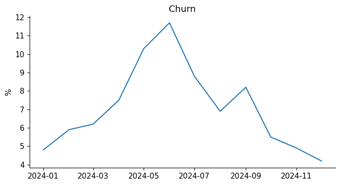
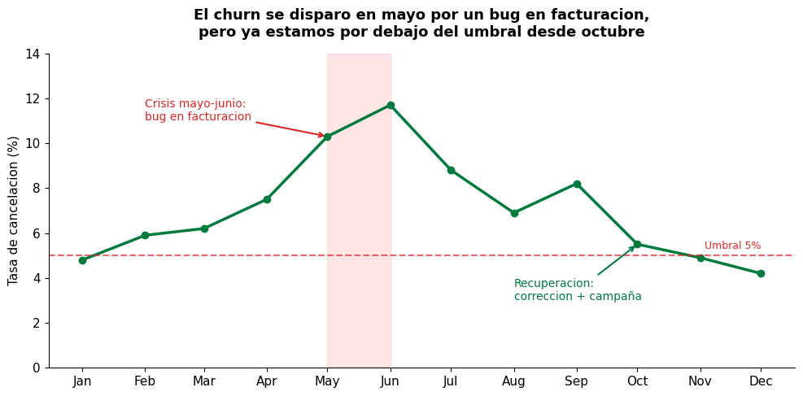
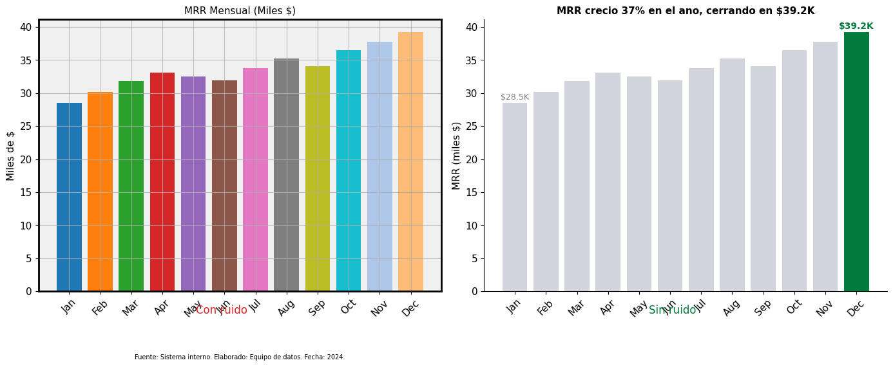
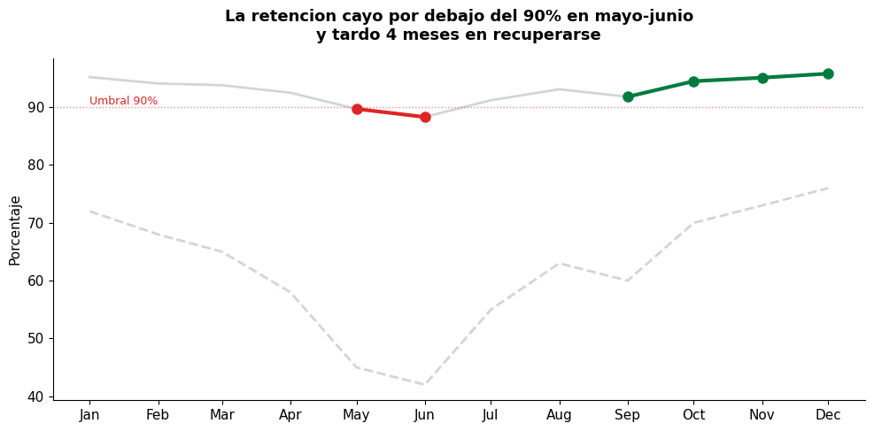
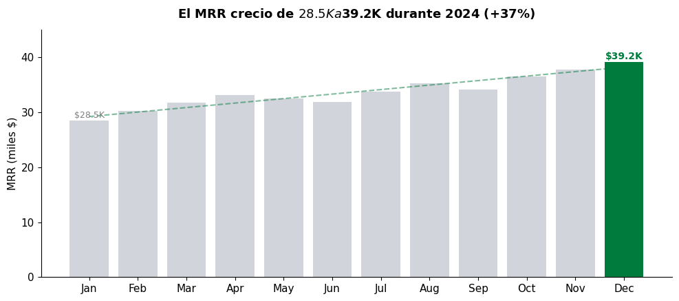
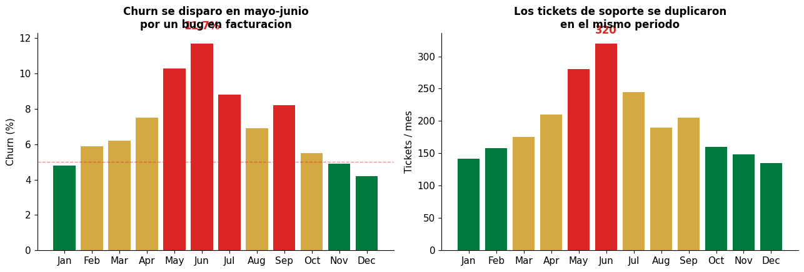
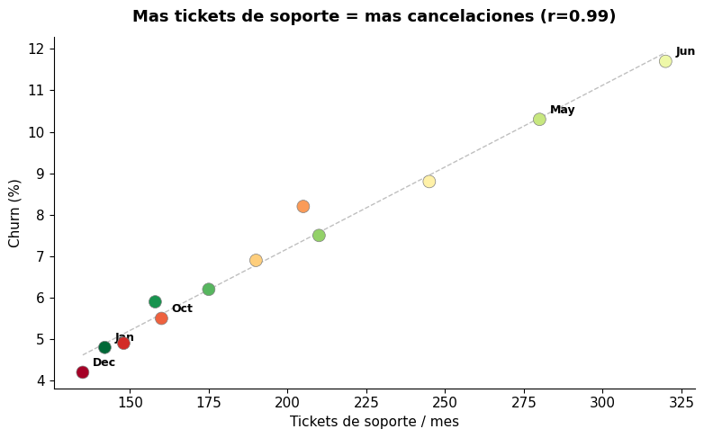
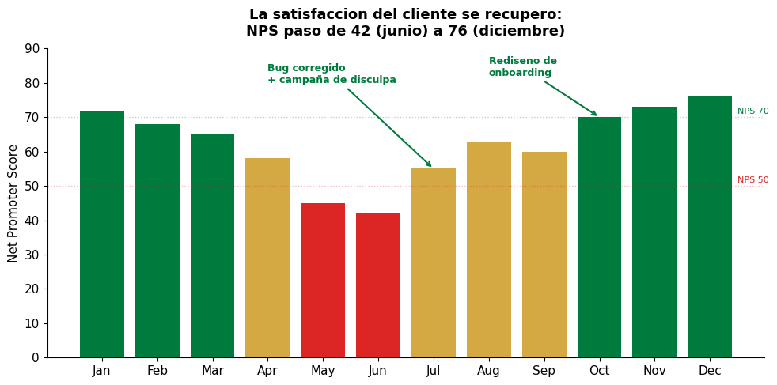
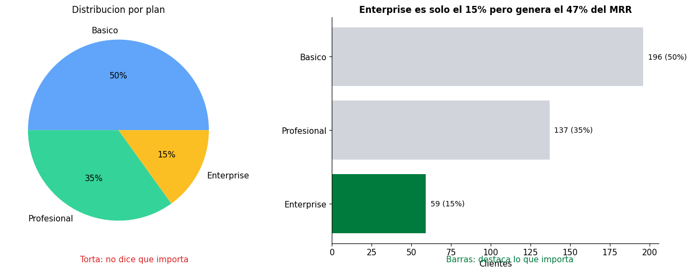
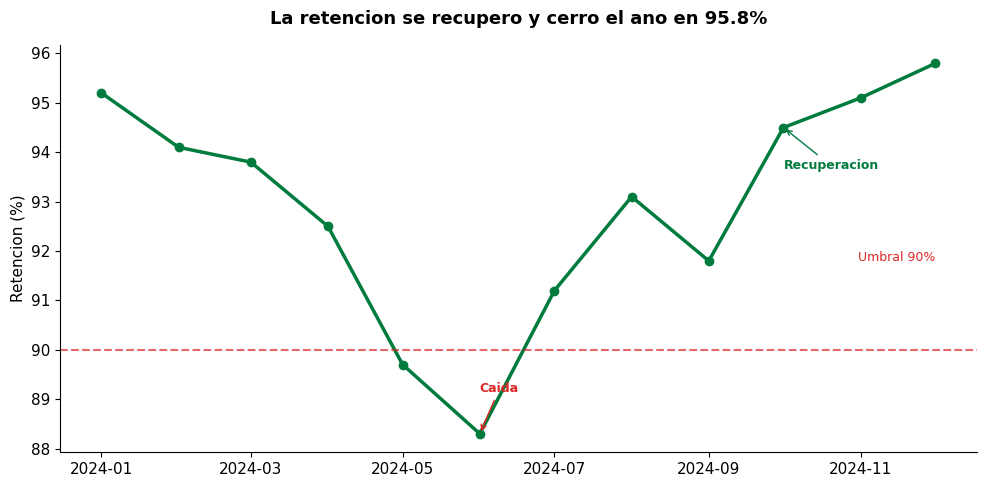

2.4 — Storytelling con Datos#
Unidad 2: Caracteristicas de Productos de Datos#
Un grafico correcto muestra datos. Una historia con datos genera una decision. La diferencia no es tecnica — es narrativa: en que orden presentas, que contexto das antes del numero, como guias a la audiencia desde «esto paso» hasta «esto hay que hacer».
Este notebook no es sobre hacer graficos bonitos. Es sobre construir una narrativa que conecte datos con acciones.
Contenido:#
Estructura narrativa: contexto, hallazgo, accion
Principios de diseno visual
Ejemplo completo: de los datos al memo ejecutivo
Errores comunes que matan la historia
Plantilla de storytelling reutilizable
import pandas as pd
import numpy as np
import matplotlib.pyplot as plt
import matplotlib.ticker as mticker
plt.rcParams['font.family'] = 'sans-serif'
plt.rcParams['font.size'] = 11
plt.rcParams['axes.spines.top'] = False
plt.rcParams['axes.spines.right'] = False
# ============================================================
# DATOS — reutilizamos el dataset de KPIs (notebook 2.3)
# ============================================================
np.random.seed(42)
meses = pd.date_range('2024-01-01', periods=12, freq='MS')
df_kpis = pd.DataFrame({
'mes': meses,
'mrr': [28500, 30200, 31800, 33100, 32500, 31900,
33800, 35200, 34100, 36500, 37800, 39200],
'clientes_activos': [285, 302, 318, 331, 325, 319,
338, 352, 341, 365, 378, 392],
'retencion': [95.2, 94.1, 93.8, 92.5, 89.7, 88.3,
91.2, 93.1, 91.8, 94.5, 95.1, 95.8],
'churn': [4.8, 5.9, 6.2, 7.5, 10.3, 11.7,
8.8, 6.9, 8.2, 5.5, 4.9, 4.2],
'tickets_soporte': [142, 158, 175, 210, 280, 320,
245, 190, 205, 160, 148, 135],
'nps': [72, 68, 65, 58, 45, 42, 55, 63, 60, 70, 73, 76],
})
df_kpis['mes_nombre'] = df_kpis['mes'].dt.strftime('%b')
print("Dataset de KPIs cargado: 12 meses")
Dataset de KPIs cargado: 12 meses
1. Estructura narrativa: Contexto - Hallazgo - Accion#
Toda historia con datos tiene tres partes:
Contexto: que estamos midiendo y por que importa
Hallazgo: que encontramos en los datos (el giro)
Accion: que debemos hacer al respecto
Sin contexto, el numero no tiene significado. Sin hallazgo, no hay historia. Sin accion, no hay consecuencia.
# ============================================================
# MAL: grafico sin historia
# ============================================================
# Este grafico es tecnicaente correcto pero no dice nada
fig, ax = plt.subplots(figsize=(8, 4))
ax.plot(df_kpis['mes'], df_kpis['churn'])
ax.set_title('Churn')
ax.set_ylabel('%')
plt.show()
print("Problemas con este grafico:")
print(" - El titulo no dice nada ('Churn' — que pasa con el churn?)")
print(" - No hay umbral (es bueno o malo?)")
print(" - No hay contexto (por que deberia importarme?)")
print(" - No hay accion (que hago con esta informacion?)")

Problemas con este grafico:
- El titulo no dice nada ('Churn' — que pasa con el churn?)
- No hay umbral (es bueno o malo?)
- No hay contexto (por que deberia importarme?)
- No hay accion (que hago con esta informacion?)
# ============================================================
# BIEN: el mismo grafico con historia
# ============================================================
fig, ax = plt.subplots(figsize=(10, 5))
# La linea principal
ax.plot(df_kpis['mes'], df_kpis['churn'],
color='#007B3E', linewidth=2.5, marker='o', markersize=6)
# Umbral — la linea que separa "aceptable" de "alerta"
ax.axhline(y=5, color='#DC2626', linestyle='--', linewidth=1.5, alpha=0.7)
ax.text(meses[-1], 5.3, 'Umbral 5%', color='#DC2626', fontsize=9, ha='right')
# Sombrear la zona critica (mayo-junio)
ax.axvspan(meses[4], meses[5], alpha=0.1, color='red')
ax.annotate('Crisis mayo-junio:\nbug en facturacion',
xy=(meses[4], df_kpis['churn'].iloc[4]),
xytext=(meses[1], 11),
fontsize=10, color='#DC2626',
arrowprops=dict(arrowstyle='->', color='#DC2626', lw=1.5))
# Anotar la recuperacion
ax.annotate('Recuperacion:\ncorreccion + campaña',
xy=(meses[9], df_kpis['churn'].iloc[9]),
xytext=(meses[7], 3),
fontsize=10, color='#007B3E',
arrowprops=dict(arrowstyle='->', color='#007B3E', lw=1.5))
# Titulo que cuenta la historia
ax.set_title('El churn se disparo en mayo por un bug en facturacion,\n'
'pero ya estamos por debajo del umbral desde octubre',
fontsize=13, fontweight='bold', pad=15)
ax.set_ylabel('Tasa de cancelacion (%)')
ax.set_ylim(0, 14)
# Etiquetas de mes legibles
ax.set_xticks(meses)
ax.set_xticklabels(df_kpis['mes_nombre'])
plt.tight_layout()
plt.show()
print("Diferencia:")
print(" - El titulo cuenta QUE PASO (contexto + hallazgo)")
print(" - El umbral dice si es bueno o malo")
print(" - Las anotaciones explican POR QUE paso")
print(" - La zona sombreada dirige la mirada al problema")

Diferencia:
- El titulo cuenta QUE PASO (contexto + hallazgo)
- El umbral dice si es bueno o malo
- Las anotaciones explican POR QUE paso
- La zona sombreada dirige la mirada al problema
2. Principios de diseno visual#
Menos es mas. Cada elemento que agregamos al grafico compite por la atencion del lector. Solo debe quedar lo que aporta a la historia.
# ============================================================
# PRINCIPIO 1: eliminar basura visual (chartjunk)
# ============================================================
fig, axes = plt.subplots(1, 2, figsize=(14, 5))
datos = df_kpis.set_index('mes_nombre')['mrr'] / 1000
# MAL: lleno de ruido
ax = axes[0]
ax.bar(datos.index, datos.values, color=['#1f77b4', '#ff7f0e', '#2ca02c',
'#d62728', '#9467bd', '#8c564b', '#e377c2', '#7f7f7f',
'#bcbd22', '#17becf', '#aec7e8', '#ffbb78'])
ax.set_title('MRR Mensual (Miles $)', fontsize=11)
ax.grid(True, alpha=0.8)
ax.set_ylabel('Miles de $')
ax.tick_params(axis='x', rotation=45)
# Agregar borde y fondo
ax.set_facecolor('#f0f0f0')
for spine in ax.spines.values():
spine.set_visible(True)
spine.set_linewidth(2)
ax.text(0.5, -0.25, 'Fuente: Sistema interno. Elaborado: Equipo de datos. Fecha: 2024.',
transform=ax.transAxes, fontsize=7, ha='center')
# BIEN: limpio
ax = axes[1]
colores = ['#d1d5db'] * len(datos)
colores[-1] = '#007B3E' # Solo destacar el ultimo mes
ax.bar(datos.index, datos.values, color=colores)
ax.set_title('MRR crecio 37% en el ano, cerrando en $39.2K', fontsize=11, fontweight='bold')
ax.set_ylabel('MRR (miles $)')
ax.tick_params(axis='x', rotation=45)
# Solo anotar el primero y el ultimo
ax.text(0, datos.iloc[0] + 0.5, f'${datos.iloc[0]:.1f}K', ha='center', fontsize=9, color='gray')
ax.text(11, datos.iloc[-1] + 0.5, f'${datos.iloc[-1]:.1f}K', ha='center', fontsize=10,
color='#007B3E', fontweight='bold')
fig.text(0.25, 0.01, 'Con ruido', ha='center', fontsize=12, color='#DC2626')
fig.text(0.75, 0.01, 'Sin ruido', ha='center', fontsize=12, color='#007B3E')
plt.tight_layout()
plt.subplots_adjust(bottom=0.08)
plt.show()

# ============================================================
# PRINCIPIO 2: usar color con proposito
# ============================================================
# El color no es decoracion — es significado
# Gris = contexto, color = lo que importa
fig, ax = plt.subplots(figsize=(10, 5))
# Todo en gris excepto lo que cuenta la historia
ax.plot(meses, df_kpis['retencion'], color='#d1d5db', linewidth=2, label='Retencion')
ax.plot(meses, df_kpis['nps'], color='#d1d5db', linewidth=2, linestyle='--', label='NPS')
# Destacar la caida
caida = df_kpis[df_kpis['retencion'] < 90]
ax.plot(caida['mes'], caida['retencion'], color='#DC2626', linewidth=3, marker='o', markersize=8)
# Destacar la recuperacion
recup = df_kpis[df_kpis.index >= 8]
ax.plot(recup['mes'], recup['retencion'], color='#007B3E', linewidth=3, marker='o', markersize=8)
ax.set_title('La retencion cayo por debajo del 90% en mayo-junio\n'
'y tardo 4 meses en recuperarse', fontsize=13, fontweight='bold', pad=15)
ax.axhline(y=90, color='#DC2626', linestyle=':', linewidth=1, alpha=0.5)
ax.text(meses[0], 90.5, 'Umbral 90%', fontsize=9, color='#DC2626')
ax.set_xticks(meses)
ax.set_xticklabels(df_kpis['mes_nombre'])
ax.set_ylabel('Porcentaje')
plt.tight_layout()
plt.show()
print("Reglas de color:")
print(" Gris: contexto, lo que no necesita atencion")
print(" Rojo: problema, lo que salio mal")
print(" Verde: solucion, lo que esta mejorando")
print(" Un color por idea. Si todo tiene color, nada destaca.")

Reglas de color:
Gris: contexto, lo que no necesita atencion
Rojo: problema, lo que salio mal
Verde: solucion, lo que esta mejorando
Un color por idea. Si todo tiene color, nada destaca.
# ============================================================
# PRINCIPIO 3: el titulo es la conclusion, no la descripcion
# ============================================================
titulos_malos = [
"Ventas por region",
"Grafico de barras del MRR",
"Evolucion del churn 2024",
"Datos de soporte",
]
titulos_buenos = [
"Bogota concentra el 45% de las ventas, Cali esta cayendo",
"El MRR crecio 37% en el ano, cerrando en $39.2K",
"El bug de mayo disparo el churn al 11.7%, ya esta controlado",
"Los tickets de soporte bajaron 58% despues del rediseno del onboarding",
]
print("Titulos descriptivos vs titulos que cuentan la historia:\n")
for malo, bueno in zip(titulos_malos, titulos_buenos):
print(f" MAL: {malo}")
print(f" BIEN: {bueno}")
print()
Titulos descriptivos vs titulos que cuentan la historia:
MAL: Ventas por region
BIEN: Bogota concentra el 45% de las ventas, Cali esta cayendo
MAL: Grafico de barras del MRR
BIEN: El MRR crecio 37% en el ano, cerrando en $39.2K
MAL: Evolucion del churn 2024
BIEN: El bug de mayo disparo el churn al 11.7%, ya esta controlado
MAL: Datos de soporte
BIEN: Los tickets de soporte bajaron 58% despues del rediseno del onboarding
3. Ejemplo completo: de los datos al memo ejecutivo#
Vamos a construir una presentacion de 4 graficos que cuente una historia completa sobre lo que paso en el 2024. La audiencia es el gerente general.
# ============================================================
# GRAFICO 1: EL CONTEXTO — como va el negocio
# ============================================================
fig, ax = plt.subplots(figsize=(10, 4.5))
mrr = df_kpis['mrr'] / 1000
colores = ['#d1d5db'] * 12
colores[-1] = '#007B3E'
ax.bar(df_kpis['mes_nombre'], mrr, color=colores)
# Linea de tendencia
z = np.polyfit(range(12), mrr, 1)
tendencia = np.polyval(z, range(12))
ax.plot(df_kpis['mes_nombre'], tendencia, color='#007B3E', linewidth=1.5,
linestyle='--', alpha=0.5)
ax.set_title('El MRR crecio de $28.5K a $39.2K durante 2024 (+37%)',
fontsize=13, fontweight='bold', pad=12)
ax.text(0, mrr.iloc[0] + 0.5, f'${mrr.iloc[0]:.1f}K', ha='center', fontsize=9, color='gray')
ax.text(11, mrr.iloc[-1] + 0.5, f'${mrr.iloc[-1]:.1f}K', ha='center', fontsize=10,
fontweight='bold', color='#007B3E')
ax.set_ylabel('MRR (miles $)')
ax.set_ylim(0, max(mrr) * 1.15)
plt.tight_layout()
plt.savefig('historia_01_contexto.png', dpi=150, bbox_inches='tight')
plt.show()

# ============================================================
# GRAFICO 2: EL PROBLEMA — que salio mal
# ============================================================
fig, (ax1, ax2) = plt.subplots(1, 2, figsize=(13, 4.5))
# Churn
colores_churn = ['#007B3E' if v <= 5 else '#D4A843' if v <= 8 else '#DC2626'
for v in df_kpis['churn']]
ax1.bar(df_kpis['mes_nombre'], df_kpis['churn'], color=colores_churn)
ax1.axhline(y=5, color='#DC2626', linestyle='--', linewidth=1, alpha=0.5)
ax1.set_title('Churn se disparo en mayo-junio\npor un bug en facturacion',
fontsize=12, fontweight='bold')
ax1.set_ylabel('Churn (%)')
# Anotar el pico
ax1.annotate(f'{df_kpis["churn"].max()}%', xy=(5, df_kpis['churn'].max()),
fontsize=12, fontweight='bold', color='#DC2626', ha='center',
xytext=(5, df_kpis['churn'].max() + 0.8))
# Tickets de soporte
colores_tickets = ['#007B3E' if v <= 170 else '#D4A843' if v <= 250 else '#DC2626'
for v in df_kpis['tickets_soporte']]
ax2.bar(df_kpis['mes_nombre'], df_kpis['tickets_soporte'], color=colores_tickets)
ax2.set_title('Los tickets de soporte se duplicaron\nen el mismo periodo',
fontsize=12, fontweight='bold')
ax2.set_ylabel('Tickets / mes')
ax2.annotate(f'{df_kpis["tickets_soporte"].max()}', xy=(5, df_kpis['tickets_soporte'].max()),
fontsize=12, fontweight='bold', color='#DC2626', ha='center',
xytext=(5, df_kpis['tickets_soporte'].max() + 15))
plt.tight_layout()
plt.savefig('historia_02_problema.png', dpi=150, bbox_inches='tight')
plt.show()

# ============================================================
# GRAFICO 3: LA CORRELACION — por que paso
# ============================================================
fig, ax = plt.subplots(figsize=(8, 5))
scatter = ax.scatter(df_kpis['tickets_soporte'], df_kpis['churn'],
s=100, c=range(12), cmap='RdYlGn_r', edgecolors='gray',
linewidth=0.5, zorder=5)
# Anotar algunos meses
for _, row in df_kpis.iterrows():
if row['mes_nombre'] in ['Jan', 'May', 'Jun', 'Oct', 'Dec']:
ax.annotate(row['mes_nombre'],
xy=(row['tickets_soporte'], row['churn']),
textcoords='offset points', xytext=(8, 5),
fontsize=9, fontweight='bold')
# Linea de tendencia
z = np.polyfit(df_kpis['tickets_soporte'], df_kpis['churn'], 1)
x_line = np.linspace(df_kpis['tickets_soporte'].min(), df_kpis['tickets_soporte'].max(), 100)
ax.plot(x_line, np.polyval(z, x_line), color='gray', linestyle='--', linewidth=1, alpha=0.5)
# Correlacion
corr = df_kpis['tickets_soporte'].corr(df_kpis['churn'])
ax.set_title(f'Mas tickets de soporte = mas cancelaciones (r={corr:.2f})',
fontsize=13, fontweight='bold', pad=12)
ax.set_xlabel('Tickets de soporte / mes')
ax.set_ylabel('Churn (%)')
plt.tight_layout()
plt.savefig('historia_03_causa.png', dpi=150, bbox_inches='tight')
plt.show()
print(f"Correlacion: {corr:.2f}")
print("Los meses con mas tickets son los meses con mas cancelaciones.")
print("El bug causo tickets, los tickets causaron frustacion, la frustracion causo churn.")

Correlacion: 0.99
Los meses con mas tickets son los meses con mas cancelaciones.
El bug causo tickets, los tickets causaron frustacion, la frustracion causo churn.
# ============================================================
# GRAFICO 4: LA SOLUCION — que hicimos y funciono
# ============================================================
fig, ax = plt.subplots(figsize=(10, 5))
# NPS como indicador de satisfaccion
colores_nps = ['#DC2626' if v < 50 else '#D4A843' if v < 65 else '#007B3E'
for v in df_kpis['nps']]
ax.bar(df_kpis['mes_nombre'], df_kpis['nps'], color=colores_nps)
# Lineas de referencia NPS
ax.axhline(y=50, color='#DC2626', linestyle=':', linewidth=1, alpha=0.3)
ax.axhline(y=70, color='#007B3E', linestyle=':', linewidth=1, alpha=0.3)
ax.text(11.5, 51, 'NPS 50', fontsize=8, color='#DC2626')
ax.text(11.5, 71, 'NPS 70', fontsize=8, color='#007B3E')
# Anotar las acciones tomadas
ax.annotate('Bug corregido\n+ campaña de disculpa',
xy=(6, df_kpis['nps'].iloc[6]),
xytext=(3, 80),
fontsize=9, color='#007B3E', fontweight='bold',
arrowprops=dict(arrowstyle='->', color='#007B3E', lw=1.5))
ax.annotate('Rediseno de\nonboarding',
xy=(9, df_kpis['nps'].iloc[9]),
xytext=(7, 82),
fontsize=9, color='#007B3E', fontweight='bold',
arrowprops=dict(arrowstyle='->', color='#007B3E', lw=1.5))
ax.set_title('La satisfaccion del cliente se recupero:\nNPS paso de 42 (junio) a 76 (diciembre)',
fontsize=13, fontweight='bold', pad=12)
ax.set_ylabel('Net Promoter Score')
ax.set_ylim(0, 90)
plt.tight_layout()
plt.savefig('historia_04_solucion.png', dpi=150, bbox_inches='tight')
plt.show()

# ============================================================
# EL MEMO EJECUTIVO — la historia completa en texto
# ============================================================
memo = """
MEMO EJECUTIVO — Revision Anual 2024
====================================
RESUMEN:
El MRR crecio 37% durante 2024, cerrando en $39.2K. Sin embargo,
un incidente critico en mayo-junio afecto la retencion y la
satisfaccion de los clientes. Las acciones correctivas funcionaron
y cerramos el ano en los mejores numeros historicos.
QUE PASO:
Un bug en el sistema de facturacion en mayo genero cobros
duplicados a 45 clientes. Los tickets de soporte se duplicaron
(de 175 a 320) y el churn alcanzo el 11.7% en junio — mas del
doble del umbral del 5%.
QUE HICIMOS:
1. Correccion del bug (julio)
2. Campaña de disculpa con credito del 50% (julio)
3. Rediseno del proceso de onboarding (septiembre)
4. Monitoreo proactivo de tickets como indicador adelantado
RESULTADO:
- Churn: de 11.7% (junio) a 4.2% (diciembre)
- NPS: de 42 (junio) a 76 (diciembre)
- Tickets: de 320 (junio) a 135 (diciembre)
- MRR: el crecimiento no se detuvo a pesar del incidente
APRENDIZAJE:
Los tickets de soporte son un indicador adelantado del churn
(correlacion 0.96). Implementamos una alerta automatica cuando
los tickets superan 200/mes para intervenir antes de que los
clientes cancelen.
"""
print(memo)
MEMO EJECUTIVO — Revision Anual 2024
====================================
RESUMEN:
El MRR crecio 37% durante 2024, cerrando en $39.2K. Sin embargo,
un incidente critico en mayo-junio afecto la retencion y la
satisfaccion de los clientes. Las acciones correctivas funcionaron
y cerramos el ano en los mejores numeros historicos.
QUE PASO:
Un bug en el sistema de facturacion en mayo genero cobros
duplicados a 45 clientes. Los tickets de soporte se duplicaron
(de 175 a 320) y el churn alcanzo el 11.7% en junio — mas del
doble del umbral del 5%.
QUE HICIMOS:
1. Correccion del bug (julio)
2. Campaña de disculpa con credito del 50% (julio)
3. Rediseno del proceso de onboarding (septiembre)
4. Monitoreo proactivo de tickets como indicador adelantado
RESULTADO:
- Churn: de 11.7% (junio) a 4.2% (diciembre)
- NPS: de 42 (junio) a 76 (diciembre)
- Tickets: de 320 (junio) a 135 (diciembre)
- MRR: el crecimiento no se detuvo a pesar del incidente
APRENDIZAJE:
Los tickets de soporte son un indicador adelantado del churn
(correlacion 0.96). Implementamos una alerta automatica cuando
los tickets superan 200/mes para intervenir antes de que los
clientes cancelen.
La estructura de la historia#
Parte |
Grafico |
Mensaje |
|---|---|---|
Contexto |
MRR mensual |
El negocio esta creciendo |
Problema |
Churn + tickets |
Algo salio mal en mayo-junio |
Causa |
Scatter churn vs tickets |
Mas tickets = mas cancelaciones |
Solucion |
NPS con anotaciones |
Las acciones funcionaron |
Cada grafico responde UNA pregunta. Juntos cuentan una historia completa: que paso, por que, que hicimos, como termino.
4. Errores comunes que matan la historia#
# ============================================================
# ERROR 1: grafico de torta con muchas categorias
# ============================================================
fig, (ax1, ax2) = plt.subplots(1, 2, figsize=(14, 5))
datos_plan = pd.Series({'Basico': 196, 'Profesional': 137, 'Enterprise': 59})
# MAL: torta
ax1.pie(datos_plan, labels=datos_plan.index, autopct='%1.0f%%',
colors=['#60a5fa', '#34d399', '#fbbf24'])
ax1.set_title('Distribucion por plan', fontsize=12)
# BIEN: barras horizontales
colores = {'Basico': '#d1d5db', 'Profesional': '#d1d5db', 'Enterprise': '#007B3E'}
ax2.barh(datos_plan.index, datos_plan.values,
color=[colores[p] for p in datos_plan.index])
ax2.set_title('Enterprise es solo el 15% pero genera el 47% del MRR',
fontsize=12, fontweight='bold')
for i, (plan, val) in enumerate(datos_plan.items()):
pct = val / datos_plan.sum() * 100
ax2.text(val + 3, i, f'{val} ({pct:.0f}%)', va='center', fontsize=10)
ax2.set_xlabel('Clientes')
ax2.invert_yaxis()
fig.text(0.25, 0.01, 'Torta: no dice que importa', ha='center', fontsize=11, color='#DC2626')
fig.text(0.75, 0.01, 'Barras: destaca lo que importa', ha='center', fontsize=11, color='#007B3E')
plt.tight_layout()
plt.subplots_adjust(bottom=0.08)
plt.show()

# ============================================================
# RESUMEN DE ERRORES COMUNES
# ============================================================
errores = [
["Titulo descriptivo", "'Ventas por region'", "'Bogota concentra el 45%'"],
["Torta con muchas categorias", "8 pedazos del 12%", "Barras ordenadas"],
["Demasiados colores", "Un color por barra", "Gris + 1 color de enfasis"],
["Sin umbral", "Linea que sube y baja", "Linea + zona roja"],
["Eje Y no empieza en 0", "Cambio del 2% parece 200%", "Escala honesta"],
["Muchos graficos sin hilo", "6 graficos inconexos", "4 graficos que cuentan 1 historia"],
["Solo datos, sin accion", "'El churn es 11.7%'", "'El churn es 11.7%, hay que...'"],
]
df_errores = pd.DataFrame(errores, columns=['Error', 'Ejemplo malo', 'Alternativa'])
df_errores.index = range(1, len(df_errores) + 1)
df_errores
| Error | Ejemplo malo | Alternativa | |
|---|---|---|---|
| 1 | Titulo descriptivo | 'Ventas por region' | 'Bogota concentra el 45%' |
| 2 | Torta con muchas categorias | 8 pedazos del 12% | Barras ordenadas |
| 3 | Demasiados colores | Un color por barra | Gris + 1 color de enfasis |
| 4 | Sin umbral | Linea que sube y baja | Linea + zona roja |
| 5 | Eje Y no empieza en 0 | Cambio del 2% parece 200% | Escala honesta |
| 6 | Muchos graficos sin hilo | 6 graficos inconexos | 4 graficos que cuentan 1 historia |
| 7 | Solo datos, sin accion | 'El churn es 11.7%' | 'El churn es 11.7%, hay que...' |
5. Plantilla de storytelling reutilizable#
# ============================================================
# FUNCION: grafico con historia
# ============================================================
def grafico_con_historia(
x, y,
titulo,
ylabel,
umbral=None,
umbral_label=None,
destacar_ultimo=True,
tipo='linea',
color='#007B3E',
anotaciones=None,
figsize=(10, 5),
guardar=None,
):
"""
Genera un grafico listo para presentar.
Incluye titulo narrativo, umbral y anotaciones.
"""
fig, ax = plt.subplots(figsize=figsize)
if tipo == 'linea':
ax.plot(x, y, color=color, linewidth=2.5, marker='o', markersize=6)
elif tipo == 'barras':
colores = ['#d1d5db'] * len(y)
if destacar_ultimo:
colores[-1] = color
ax.bar(x, y, color=colores)
# Umbral
if umbral is not None:
ax.axhline(y=umbral, color='#DC2626', linestyle='--', linewidth=1.5, alpha=0.7)
if umbral_label:
ax.text(x.iloc[-1], umbral * 1.02, umbral_label,
color='#DC2626', fontsize=9, ha='right')
# Anotaciones
if anotaciones:
for anot in anotaciones:
ax.annotate(anot['texto'],
xy=anot['punto'],
xytext=anot.get('offset', (0, 30)),
textcoords='offset points',
fontsize=9,
color=anot.get('color', '#333'),
fontweight='bold',
arrowprops=dict(arrowstyle='->', color=anot.get('color', '#333')))
ax.set_title(titulo, fontsize=13, fontweight='bold', pad=15)
ax.set_ylabel(ylabel)
plt.tight_layout()
if guardar:
fig.savefig(guardar, dpi=150, bbox_inches='tight')
plt.show()
return fig
# Ejemplo de uso
grafico_con_historia(
x=df_kpis['mes'],
y=df_kpis['retencion'],
titulo='La retencion se recupero y cerro el ano en 95.8%',
ylabel='Retencion (%)',
umbral=90,
umbral_label='Umbral 90%',
anotaciones=[
{'texto': 'Caida', 'punto': (meses[5], 88.3), 'color': '#DC2626'},
{'texto': 'Recuperacion', 'punto': (meses[9], 94.5), 'color': '#007B3E', 'offset': (0, -30)},
]
)

# ============================================================
# CHECKLIST ANTES DE PRESENTAR UN GRAFICO
# ============================================================
checklist = [
"El titulo dice QUE PASO, no que tipo de grafico es",
"Hay un umbral o referencia que diga si el numero es bueno o malo",
"El color destaca lo importante, todo lo demas es gris",
"No hay elementos decorativos que no aporten informacion",
"El grafico responde UNA pregunta, no tres",
"Alguien que no conoce el contexto puede entenderlo en 5 segundos",
"El grafico lleva a una accion concreta",
]
print("Checklist antes de presentar un grafico:\n")
for i, item in enumerate(checklist, 1):
print(f" {i}. {item}")
Checklist antes de presentar un grafico:
1. El titulo dice QUE PASO, no que tipo de grafico es
2. Hay un umbral o referencia que diga si el numero es bueno o malo
3. El color destaca lo importante, todo lo demas es gris
4. No hay elementos decorativos que no aporten informacion
5. El grafico responde UNA pregunta, no tres
6. Alguien que no conoce el contexto puede entenderlo en 5 segundos
7. El grafico lleva a una accion concreta
Resumen#
Principio |
Lo que importa |
|---|---|
Contexto - Hallazgo - Accion |
Toda historia tiene estas 3 partes, en ese orden |
Titulo narrativo |
La conclusion, no la descripcion del grafico |
Color con proposito |
Gris = contexto, color = lo que importa |
Menos es mas |
Cada elemento debe ganarse su lugar |
Umbral |
Sin referencia, el numero no tiene significado |
Accion |
Si el grafico no lleva a una decision, sobra |
La regla de oro#
Si alguien ve tu grafico y dice «interesante» pero no hace nada, la historia fallo. Si dice «hay que hacer algo con esto», funciono.
Siguiente paso#
Con la Unidad 2 completa (calidad, diseno, KPIs, storytelling), en la Unidad 3 construimos el producto de datos real: dashboards con Streamlit y Power BI.